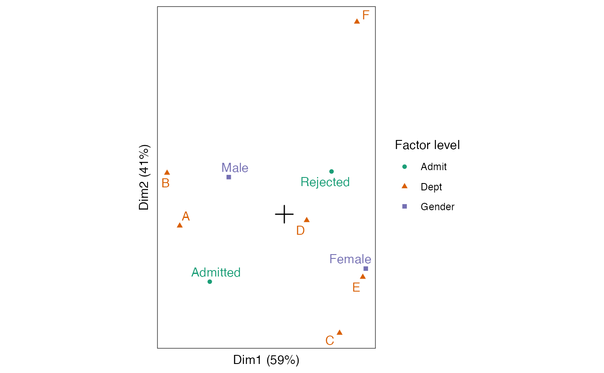

R/methods-mass-mca.r
methods-mca.RdThese methods extract data from, and attribute new data to,
objects of class "mca" from the MASS package.
# S3 method for class 'mca'
as_tbl_ord(x)
# S3 method for class 'mca'
recover_rows(x)
# S3 method for class 'mca'
recover_cols(x)
# S3 method for class 'mca'
recover_inertia(x)
# S3 method for class 'mca'
recover_conference(x)
# S3 method for class 'mca'
recover_coord(x)
# S3 method for class 'mca'
recover_supp_rows(x)
# S3 method for class 'mca'
recover_aug_rows(x)
# S3 method for class 'mca'
recover_aug_cols(x)
# S3 method for class 'mca'
recover_aug_coord(x)The recovery generics recover_*() return core model components, distribution of inertia,
supplementary elements, and intrinsic metadata; but they require methods for each model class to
tell them what these components are.
The generic as_tbl_ord() returns its input wrapped in the 'tbl_ord'
class. Its methods determine what model classes it is allowed to wrap. It
then provides 'tbl_ord' methods with access to the recoverers and hence to
the model components.
Multiple correspondence analysis (MCA) relies on a singular value
decomposition of the indicator matrix \(X\) of a table of several
categorical variables, scaled by its column totals. MASS::mca() returns the
SVD factors \(UD\) and \(V\) as the row weights $fs, on which the
inertia is conferred, and the column coordinates $cs. The row coordinates
$rs are obtained as \(XV\) and accessible as supplementary elements.
Other methods for singular value decomposition-based techniques:
methods-cancor,
methods-correspondence,
methods-lda,
methods-lra,
methods-prcomp,
methods-princomp,
methods-svd
Other models from the MASS package:
methods-correspondence,
methods-lda
# table of admissions and rejections from UC Berkeley
class(UCBAdmissions)
#> [1] "table"
ucb_admissions <- as.data.frame(UCBAdmissions)
ucb_admissions <-
ucb_admissions[rep(seq(nrow(ucb_admissions)), ucb_admissions$Freq), -4L]
head(ucb_admissions)
#> Admit Gender Dept
#> 1 Admitted Male A
#> 1.1 Admitted Male A
#> 1.2 Admitted Male A
#> 1.3 Admitted Male A
#> 1.4 Admitted Male A
#> 1.5 Admitted Male A
# perform multiple correspondence analysis
ucb_admissions %>%
MASS::mca() %>%
as_tbl_ord() %>%
# augment profiles with names, masses, distances, and inertias
augment_ord() %>%
print() -> admissions_mca
#> # A tbl_ord of class 'mca': (9052 x 2) x (10 x 2)'
#> # 2 coordinates: Dim1 and Dim2
#> #
#> # Rows (principal): [ 9052 x 2 | 2 ]
#> Dim1 Dim2 | name .element
#> | <chr> <chr>
#> 1 -0.0100 -0.00261 | 1 1 active
#> 2 -0.0100 -0.00261 | 2 1.1 active
#> 3 -0.0100 -0.00261 | 3 1.2 active
#> 4 -0.0100 -0.00261 | 4 1.3 active
#> 5 -0.0100 -0.00261 | 5 1.4 active
#> # ℹ 9,047 more rows
#> #
#> # Columns (standard): [ 10 x 2 | 4 ]
#> Dim1 Dim2 | name factor level .element
#> | <chr> <chr> <chr> <chr>
#> 1 -0.00533 -0.00483 | 1 Admit.Admi… Admit Admi… active
#> 2 0.00338 0.00306 | 2 Admit.Reje… Admit Reje… active
#> 3 -0.00397 0.00266 | 3 Gender.Male Gender Male active
#> 4 0.00582 -0.00390 | 4 Gender.Fem… Gender Fema… active
#> 5 -0.00748 -0.000829 | 5 Dept.A Dept A active
#> 6 -0.00838 0.00295 | 6 Dept.B Dept B active
#> 7 0.00395 -0.00851 | 7 Dept.C Dept C active
#> 8 0.00160 -0.000439 | 8 Dept.D Dept D active
#> 9 0.00561 -0.00450 | 9 Dept.E Dept E active
#> 10 0.00519 0.0138 | 10 Dept.F Dept F active
# recover row and column coordinates and row weights
head(get_rows(admissions_mca, elements = "score"))
#> Dim1 Dim2
#> 1 -0.005592325 -0.001001186
#> 1.1 -0.005592325 -0.001001186
#> 1.2 -0.005592325 -0.001001186
#> 1.3 -0.005592325 -0.001001186
#> 1.4 -0.005592325 -0.001001186
#> 1.5 -0.005592325 -0.001001186
get_cols(admissions_mca)
#> Dim1 Dim2
#> Admit.Admitted -0.005329295 -0.0048307823
#> Admit.Rejected 0.003375284 0.0030595536
#> Gender.Male -0.003971450 0.0026563610
#> Gender.Female 0.005824072 -0.0038955136
#> Dept.A -0.007476230 -0.0008291371
#> Dept.B -0.008381159 0.0029516575
#> Dept.C 0.003949742 -0.0085082718
#> Dept.D 0.001600698 -0.0004388113
#> Dept.E 0.005610973 -0.0045007472
#> Dept.F 0.005193103 0.0137723160
head(get_rows(admissions_mca))
#> Dim1 Dim2
#> 1 -0.009997779 -0.002609712
#> 1.1 -0.009997779 -0.002609712
#> 1.2 -0.009997779 -0.002609712
#> 1.3 -0.009997779 -0.002609712
#> 1.4 -0.009997779 -0.002609712
#> 1.5 -0.009997779 -0.002609712
# column-standard biplot of factor levels
admissions_mca %>%
ggbiplot() +
theme_bw() + theme_biplot() +
geom_origin() +
#geom_rows_point(stat = "unique") +
geom_cols_point(aes(color = factor, shape = factor)) +
geom_cols_text_repel(aes(label = level, color = factor),
show.legend = FALSE) +
scale_color_brewer(palette = "Dark2") +
scale_size_area(guide = "none") +
labs(color = "Factor level", shape = "Factor level")
